00:00:00
大家好，今天我們講奪門之變。景泰八年正月十七日，大明王朝的文武大臣像往常一樣入宮早朝，他們走入奉天門之後看到的景象使他們目瞪口呆——皇位上坐著的皇帝居然不是景帝朱祁鈺。
而是八年前的皇帝英宗朱祁鎮。就在群臣面面相覷還沒搞清楚怎麼回事的時候，徐有貞站出來大喊一聲「太上皇復位」。英宗朱祁鎮對百官說道：「景泰皇帝病重，迎群臣迎朕復位，你們仍然擔任原來的官職，咱們共享太平。」一眾大臣看到如此情形，只好跪下參拜，口呼萬歲。被幽禁在南宮的太上皇朱祁鎮一夜復辟，史稱「奪門之變」或者「南宮復辟」。朱祁鎮也是歷史上唯一一位由太上皇成功復辟的皇帝。朱祁鎮為什麼能夠成功復辟？他復辟之後給明朝帶來的影響是什麼？今天我們就講講這場奪門之變。
景泰二年七月，景帝朱祁鈺寵愛的杭妃給他生下了一個兒子，取名朱見濟。有了朱見濟之後，景帝就開始想要易立太子。現在的太子是朱見深，有了自己的兒子之後，景帝就想讓他自己的兒子當太子。但景帝在登基的時候曾經發佈過詔書，許諾過接受朱見深為太子。這時候他要改立太子，實在是沒有什麼理由。景帝只能試探性的去試試朝廷內外的態度。他第一個先試探的是大宦官金英，他問金英：「太子的生日是七月初二吧？」七月初二是景帝的兒子朱見濟的生日。金英一聽就明白景帝是什麼意思，他要是接話說太子的生日確實是七月初二，金英雖然明白，但是他偏向於朱見深，不想附和景帝，他就回答道：「太子的生日是十一月初二。」景帝一聽，接下來的話就不說了。
景帝就把話放明白了，去問宦官王誠和舒良的意見。王誠和舒良都是景帝寵信的太監。王誠給景帝出主意，他說：「您可以去賄賂大臣，讓皇帝去賄賂大臣。」這聽起來有點奇怪啊，但是景帝還真聽了。他賜給內閣大學士陳循、高穀、王文等人每人100兩白銀。這些大臣拿到景帝的賞賜之後都明白景帝這是要改立太子。
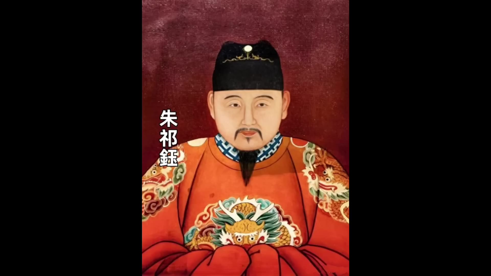
吏部尚書王直氣得拍案頓足，說道：「這叫什麼事？我輩慚愧死了。」這些大臣雖然都明白景帝的心意，這下景帝著急了。景帝的太監興安跑前跑後的忙活，滿朝文武居然沒有任何一個人上奏提出要改立太子。就在這時候，遠在千里之外的廣西發生一件事，沒想到幫了景帝一把。廣西思明府的土知府一直都是由黃家世襲。景泰三年正月的時候，老知府年老，他想傳位給大兒子，結果他的小兒子黃紘不幹。黃紘為了世襲這個位置，居然殺死了他父親和他兄長全家。結果後來事情被揭發出來，當地巡撫要把黃紘革職查辦。黃紘趕緊派人到京師求救，他讓人帶上重金想要行賄保命。他派去的人到了京師之後，經過「高人」指點，回去告訴黃紘應該怎麼辦。黃紘收到高人的指示之後，居然從千里之外給景帝上奏折，請求改立太子。他寫的內容大概意思是說：「皇帝即位已經3年了，還沒有立自己的兒子為皇儲，但恐怕不是社稷之福。一旦形勢有變，就有可能發生內部相殘，到時候悔之晚矣。所以乞求皇帝快點把自己的兒子立為皇儲。」黃紘說的這番話完全是政治投機，但是景帝看到之後非常高興。景帝說：
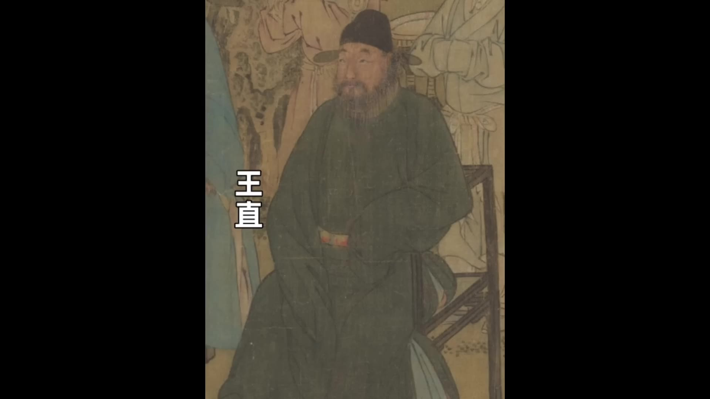
「沒想到在千里之外還有這樣的忠臣。」景帝不但下旨免除了黃紘的殺父殺兄之罪，還給他升官都督同知。然後景帝把黃紘的奏折發給禮部，讓禮部尚書胡濙主持廷議。在廷議的時候，戶科給事中李侃、吏科給事中林聰還有御史朱英三個人率先反對。但是，一些重臣王直和胡濙這些重臣都沒表態。像于謙看到這些有威望的重臣都不表態，宦官興安（口誤）厲聲說道：「同意的署上名字，不同意的不必署名，但是不可以首鼠兩端。」然後他就掏出一張紙讓群臣簽名。一眾大臣看興安早有準備，事已至此，大多數都表示贊同。內閣大學士陳循、高穀等人他們收過景帝的賄賂，他們先簽名，但是猶豫了一會。
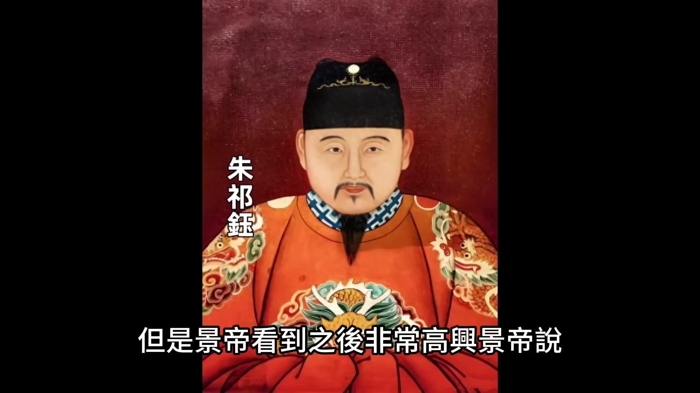
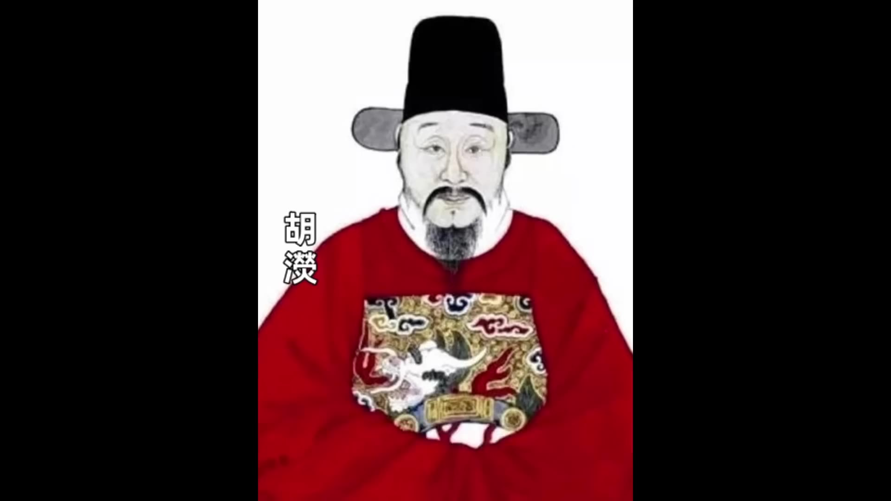
00:05:00
他也簽了，輪到于謙的時候，于謙猶豫了很久，最終也簽了。後面的大臣看陳循、王宜、于謙這些重臣都簽了，也就都跟著簽了。最後滿朝文武官員都簽了字，只有一個人沒簽，就是吏科給事中林聰。林聰也為他這個舉動付出了代價，後來他被景帝找個理由打入大牢。廷議結束之後
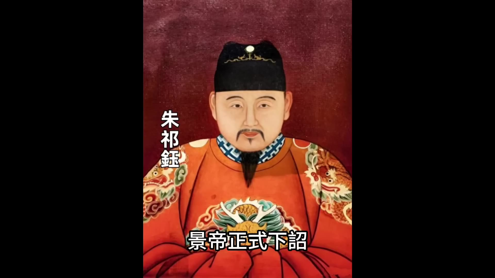
景帝正式下詔立皇子朱見濟為皇太子，改封原太子朱見深為沂王。在這件事情上，于謙的表現跟以往不一。以前無論是遷都問題、北京保衛戰的防禦策略，還是要不要跟瓦剌議和的問題，這些對外的事情，于謙都能表現出堅定的立場。但這次對於皇室的問題，他猶豫不決，最終沒能堅持。于謙在簽字的時候，他既沒有堅持不簽，但是呢，也沒表現出來很同意。由於他一直是猶豫不決的態度，景帝對他也很不滿意。從此景帝就逐漸疏遠了于謙，始終沒讓于謙入內閣。
歷史很有戲劇性，景帝費盡心機廢掉了英宗的兒子朱見深，把自己的兒子朱見濟立為太子。但是朱見濟當上太子之後只過了一年就天折了。景帝只有朱見濟這一個兒子，這下太子的位置懸空了。太子位懸空，眾大臣又想復立朱見深為太子。景帝私心很重，估計誰會倒霉，但是也有不怕死的監察御史鐘同和禮部郎中章綸兩個人先後上書建議重新立朱見深為太子。果然景帝大怒，他讓錦衣衛把鐘同和章綸都抓起來關進了臭名昭著的詔獄。主審官員得到司禮監的授意，一定要追究出幕後主使是誰。對鐘同和章綸嚴刑拷打，誰是幕後主使？主審官不停的影射南宮，詢問他們二人是如何跟南宮聯繫的。南宮關的就是太上皇英宗，他們想把幕後的主使往太上皇英宗身上引導。但是鐘同和章綸根本就沒有幕後主使，他們也很有氣節，沒有被屈打成招。鐘同和章綸被冤枉，有很多大臣同情和支持他們，但是沒人敢替他們說話。這時候有一個進士叫楊集，楊集給于謙寫了一封信。這封信說的很不客氣，說當時改立太子本來就不對，你們這些堪稱國家棟梁的大臣居然允許了，你們難道不應該根根辦法營救嗎？如果他們被打死了，你們就可以安坐高堂享受俸祿嗎？
于謙看到這封信心中很有感觸，他把信拿給剛入閣的大學士王文看。主文說這個書生不知忌諱，不過還挺有膽量。於是他就讓楊集出任六安知州。于謙和王文雖然欣賞楊集的膽識，對鐘同和章綸也沒出手營救。最後鐘同被活活打死，章綸被打得奄奄一息，一直關在牢里。從此之後，滿朝文武再也沒有人敢提復立太子的事情。章綸的結局我們說一下，英宗復辟之後聽說了鐘同和章綸的事情，他把章綸從牢裡面解救出來，給章綸升官，厚厚的加賞了他一番。
景泰八年正月，年僅29歲的景帝居然病倒了，而且病的還不輕。景帝病倒之後好幾天都不能來上朝，大臣們每天都去左順門問安。正月十二號這天，大臣們還是來問安，景帝的太監興安有點不耐煩了，興安說：「你們都是朝廷的股肱之臣，不能為社稷考慮，每天徒勞來問安，又有什麼用？」大臣每天來問安一方面是關心景帝的病情，還有一方面他們最擔心的是「儲位未定」，就是景帝還沒立太子。聽到興安這麼說，好像是在暗示大臣們應該早日立儲。大臣們就在文淵閣開會討論，請求皇帝冊立皇儲。一開始陳循、高穀、胡濙等大臣都說應該請皇帝重新立沂王朱見深為太子。後來有人說，沂王既然已經退了就不可以重立，我們只能提出來「早建元良」的請求，「早建元良」就是盡快冊立太子。正月十四大臣們把「早建元良」的奏折遞上去之後，景帝回復說：
「朕偶有寒疾，十七日當早朝，所請不允。」景帝的意思就是說他病得不嚴重，不用考慮立太子的問題，十七號他就能來早朝。景帝說他病得不嚴重，但實際情況好像並不是。第二天是正月十五，正月十五有一個很重要的在南郊舉行的祭祀儀式，這個祭祀儀式是需要皇帝親自主持的。景帝依然是病得起不來床，他只能選一位可靠的大臣替他去南郊祭祀。景帝選的大臣是武清侯石亨，石亨我們講北京保衛戰的時候介紹過。
00:10:01
打北京保衛戰的時候，兩個最高的統帥是于謙和石亨。于謙是文官，石亨是武將，石亨是軍方的最高統帥。北京保衛戰結束之後，石亨被封為武清侯，景帝任命他為總兵官提督京城各營兵馬，也就是說在景泰年間，石亨是大明武將的核心，是最重要的武將領袖。景帝在病重的時候，他沒有傳召于謙，沒有傳召內閣大臣，而傳召的是石亨，說明景帝對石亨非常信任。景帝把石亨傳召到自己的病榻前，親自囑咐他祭祀的事宜。
景帝對石亨是充滿信任，但是石亨卻動了別的心思。石亨是發動奪門之變的第一個重要人物。石亨是在景帝生病之後，外臣裡面唯一一個見到景帝的人，他就開始為自己的將來做打算。一旦景帝駕崩，誰會繼承王位，他的前途如何，石亨滿腦子裡面飛快的運轉。他聽說文臣裡面有一些大臣要擁立沂王朱見深為太子，還有一些大臣建議要立襄王世子為太子。景帝要是駕崩了，不管是朱見深當皇帝還是襄王世子來當皇帝，這些都是文臣擁立的功勞，功勞落不到他這個武將頭上。石亨想到一個立功的方法，要是他能夠擁立英宗復辟，這絕對是一個蓋世奇功。
石亨從景帝那出來之後，找到兩個人，一個是都督張軏，一個是太監曹吉祥。張軏是前府右都督總京營兵，是京師裡面握有兵權的實力派人物，他是武將，跟石亨是同樣的處境，就是無論誰當太子，擁立太子的功勞都落不到他頭上，所以他也贊同幫助英宗復辟。
曹吉祥在皇宮裡面是司設監太監，司設監太監的地位雖然沒有司禮監太監高，但是他曾經多次隨軍出征，在皇宮裡面他能調動禁軍和內廷侍衛。石亨找曹吉祥還有一個原因是，曹吉祥以前是依附過大太監王振的，英宗在位的時候，曹吉祥就比較得英宗的寵信。景帝即位之後，王振的同黨無論是太監還是錦衣衛，很大一部分都被景帝清理了，但是曹吉祥為人比較圓滑，他居然逃過一劫，而且還又逐漸獲得了景帝的信任。所以石亨找的這兩個人，一個是能夠調動京營的兵馬，一個是能夠調動宮內的禁軍，都是關鍵人物。三個人一拍即合要幹成這件大事，商議完成之後，三個人分頭行動。
曹吉祥進宮去見孫太后，取得孫太后的支持。有孫太后的支持，英宗復辟在政治上就具有合法性。石亨和張軏一起去找太常寺少卿許彬，因為他們兩個都是武將，需要許彬出來出謀劃策。許彬說這是一件不世奇功，不過我老了不中用了，你們去找徐有貞，徐有貞足智多謀，你們可以去找他商議。
石亨和張軏又連夜去找徐有貞。徐有貞就是徐珵，我們以前講過，他明軍在土木堡戰敗之後，徐珵是第一個主張南遷的人。徐珵當時說他觀察天象，北方已經不可為，他主張遷都南京，他的建議在朝廷上遭到于謙的大聲呵斥。于謙說「言南遷者可斬也」，然後就打北京保衛戰，明軍守住了北京城。從此之後，徐珵不僅一直沒得到升遷，他還名聲大壞，經常被人嘲笑，所以徐珵對于謙非常記恨，後來徐珵把名字改為徐有貞繼續當官。
徐有貞這個人其實很有才，景泰二年的時候，黃河沙灣運道決堤，徐有貞被派去治理黄河，當地黃河的問題很複雜，很多官員去治理都沒有成效。徐有真去了之後，他沼著河堤現揚勘查，提出了二條疏通措施，最後成功的消除了水患，整個過程他既展現出了實幹能力，又展現出了行政能力，所以徐有貞在能力方面被很多人看好。
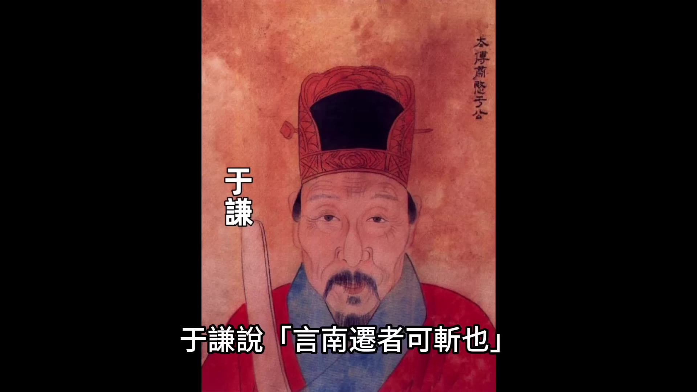
_徐有貞治理黄河的過程展現了他的實幹與行政能力_
石亨和張軏找到徐有貞，徐有貞非常興奮，他認為這是千載難逢的好機會，徐有貞就成為了策劃整個事件的核心人物。徐有貞又是觀測天象，咱們得盡快下手，他們幾個仔細策劃之後決定在正月十六晚上動手。這時候曹吉祥也傳來消息，曹吉祥說孫太后那邊已經同意了，而且孫太后通過宮內的渠道已經把消息傳遞給了在南宮的英宗，英宗也已經有了準備。徐有貞又找了兩個幫手，一個是楊善，楊善我們上期節目也說過，他就是那個憑借一己之力把英宗從瓦刺迎回朝的人，他肯定是支持英宗復辟。
00:15:00
王驥是五朝老臣，當時已經80歲了，但是身體還很好，曾經立下過赫赫戰功，被封為靖遠伯。景帝登基之後為了削弱正統舊臣的影響力，把王驥派往南京邊緣化。王驥心中對景帝就一直有不滿的情緒。當時正好是正月，各地的官員每三年要到京師進行一次朝覲，也就是他們親自向皇帝彙報工作。剛好這時候王驥在北京等著向皇帝彙報，他就被石亨和徐有貞拉攏，一起參與了奪門之變策劃。奪門之變的幾個人就已經聚齊了，楊善、石亨、徐有貞、曹吉祥、張軏，他們做好了全盤的計劃，就等十六號晚上行動。從十四號石亨見到景帝病重到16號晚上行動，他們一共才準備了3天時間，這屬於是臨時起意快速行動。由於時間很短他們又很謹慎，所以沒被文官集團聽到任何風聲。
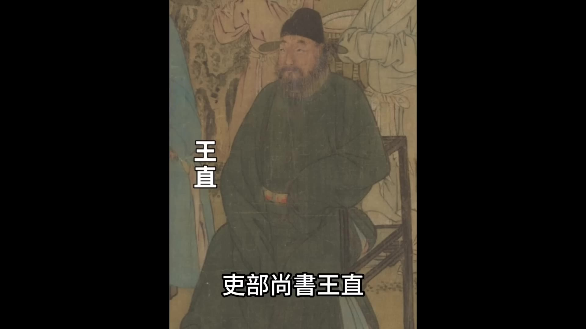
十六號白天文官集團這邊也有行動，吏部尚書王直、禮部尚書胡濙、兵部尚書于謙他們組織群臣商議，決定要一起上奏請求皇帝復立沂王朱見深為太子。眾人在商議結束然後起草完奏折之後，太陽已經下山了，當天來不及上奏朝廷。反正第二天是十七號，景帝說過十七號會上朝，大家就覺得十七號早朝再把奏折遞上去直接遞給皇帝看。但是所有人都沒想到政變就在這天晚上爆發，這份奏折如果能夠早遞上去，天可能很多人的命運都會改變，這些建議復立朱見深為太子的人有可能就不會被清算。
正月十六日晚上，徐有貞換上朝服，懷著緊張的心情離開家，出門之前他還跟家人交代說：「我要去辦一件大事，辦成了是朝廷之福，辦不成咱們家就是滅頂之災，你們要有心理準備。」石亨、徐有貞、曹吉祥幾方人馬會齊了之後，張軏又調來了大隊的京營士兵一起向皇城進發。
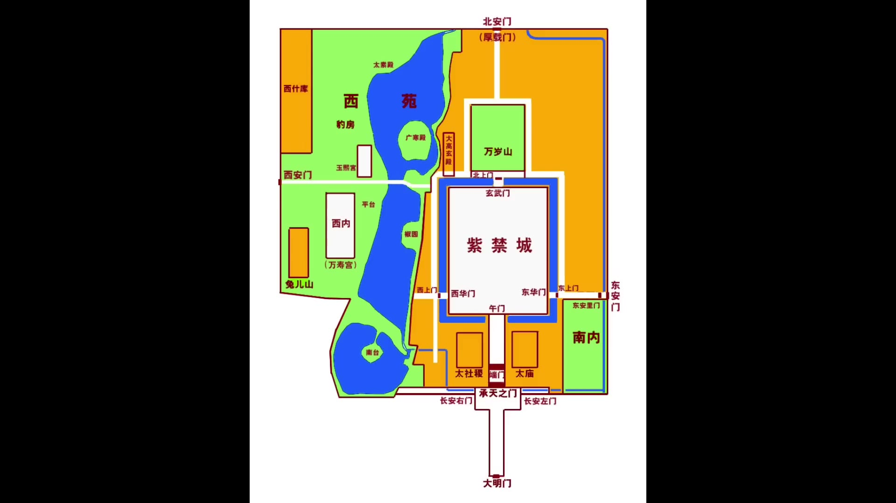
石亨掌管著皇城的通行權，所以他們進入皇城沒受到任何阻礙。進入皇城之後他們很快到達南宮，南宮的宮門被景帝下令封死。徐有貞看到情況之後果斷下令讓士兵找來了一根巨大的木頭，幾十個士兵利用這根巨木撞開了宮門和圍牆，他們才進入到南宮的內部。進入到南宮內部之後他們見到英宗，英宗已經在等著了，眾人一起跪在地上說道：「請太上皇登位。」
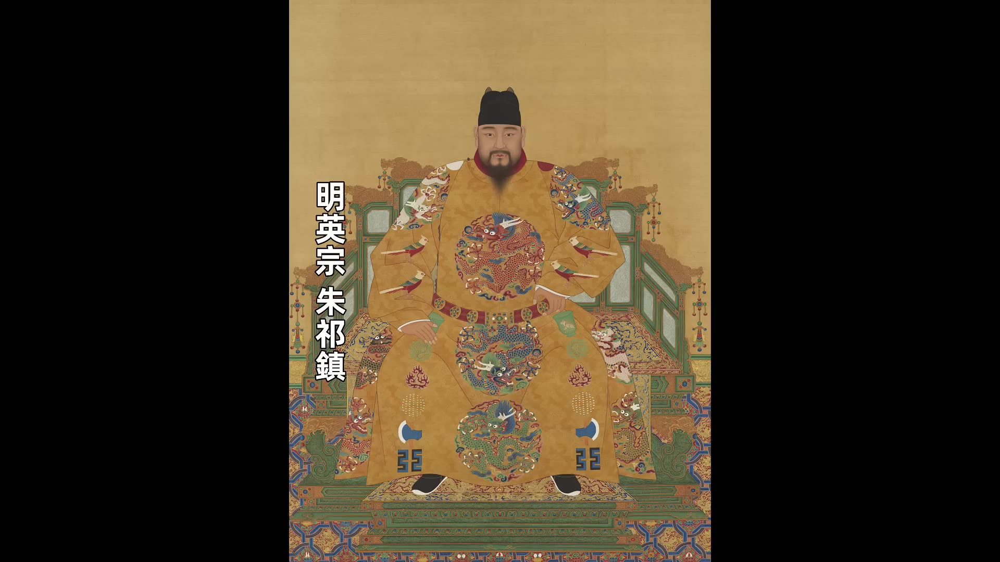
英宗挨個問了這些人的官職姓名，表達出不會忘記的意思，然後跟著眾人一起出發。一行人來到東華門，守門的士兵上前阻攔，英宗朱祁鎮站出來說：「我是太上皇。」守門的士兵不敢阻攔，眾人兵不血刃的進入到皇宮，然後進入到奉天門，朱祁鎮坐上了皇帝的寶座，眾人跪在地上高呼萬歲。這時候天色已經微亮，由於景帝說過今天要來早朝，所以一眾大臣都已經早早的等候在午門外。石亨敲響鐘鼓召集群臣進來，聽到鐘鼓聲後眾大臣按照順序走入奉天門，但是眼前的一幕讓他們目瞪口呆，坐在皇位上的居然不是景帝朱祁鈺，而是八年前的皇帝朱祁鎮。這時候徐有貞站出來大喊一聲：「太上皇復辟了！」英宗對百官宣佈說：「景泰皇帝病重，群臣迎朕復位，你們仍然擔任原來的官職，咱們共享太平。」一眾大臣看到如此情形只好跪下參拜，口呼萬歲。英宗成功復辟，英宗復辟之後把景帝貶回為郕王，一個月之後景帝朱祁鈺就去世了。根據史料記載朱祁鈺是病死的，但是也有傳聞說他是被害死的，真相究竟是什麼這個就沒人知道了。英宗賜給他一個帶有負面評價的謚號「郕戾王」，「戾」是暴戾的「戾」。
景帝時期受到重用的大臣也遭到英宗的清算，英宗復辟當天兵部尚書于謙和內閣大學士王文就被錦衣衛當場逮捕，然後內閣大學士陳循、刑部尚書俞士悅、工部尚書江淵等人也被下獄，包括景帝親信的宦官舒良等人也被逮捕下獄。王誠、于謙和王文被逮捕之後遭到酷刑，然後以「意欲迎立襄王世子」的罪名被判處死刑。這個罪名是「意欲迎立襄王世子」，因為刑部對於謙和王文嚴刑拷打，但是始終找不到他們迎立襄王世子的證據，要是能找到證據的罪名就坐寶了，「迎立襄王世子」這是謀反罪是大罪，肯定是要被處死，但是他們找不到證據，最後定的罪名就是「意欲迎立襄王世子」也給定成了死刑。
00:20:01
當英宗看到三法司把于謙定為死刑的時候他是很猶豫的他沒有立刻下令執行而是猶豫了兩天
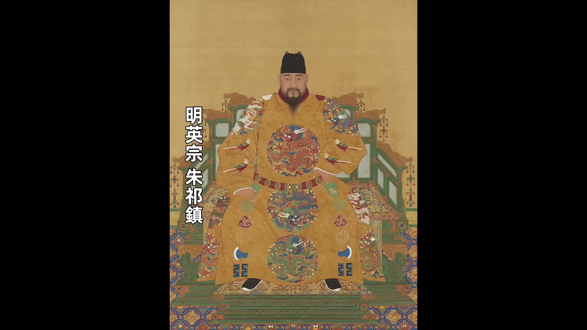
英宗知道于謙在北京保衛戰中立有巨大功勞要是沒有于謙他的宗廟社稷可能都危險了所以對於殺于謙英宗很猶豫但是徐有貞和石亨等人跟于謙都有重大過節他們堅持要殺于謙徐有貞跟于謙的過節很明顯了徐有貞當年建議南遷就是被于謙呵止導致他在景泰朝一直都不得志石亨跟于謙也有過節石亨曾經討好過于謙反被于謙羞辱石亨有一次給景帝上書請求景帝加封于謙的兒子于冕這是他有意的去討好于謙
沒想到于謙很清高他不僅義正言辭的拒絕了石亨還當眾指責石亨徇私這搞得石亨非常難堪
這個過節只是一個事件更重要的是
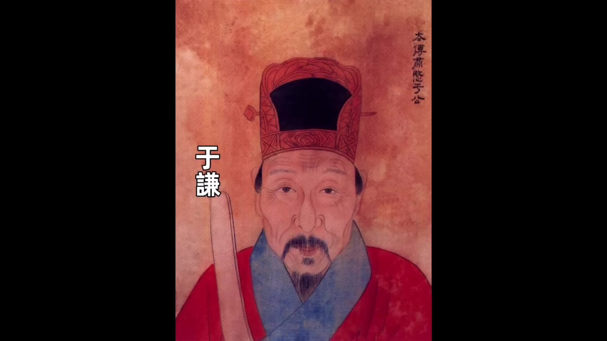
在景泰朝時期于謙以兵部尚書的名義總督軍務他在軍事的管理上非常強硬石亨作為手握兵權的大將作為武官的統帥一直被于謙壓制朝廷上就形成了文官壓制武官的風氣這種長期的被壓制讓石亨對於于謙懷恨在心其實徐有貞和石亨都知道要是于謙不死他們即使復辟立功也難以掌握朝政大權他們要想掌權必須要除掉于謙•所以他們就羅織罪名以「意欲迎立襄王世子」的罪名要殺掉于謙在英宗猶豫不決的時候徐有真跟英宗說說不殺死于謙此舉無名他的意思就是說要是不處死于謙我們發動的這場奪門之變就失去了政治上的正當名義這個是為什麼呢因為他們給于謙定的罪是「意欲迎立襄王世子』迎立襄王世子這是謀反的大罪徐有貞的邏輯是他們發動奪門之變正是為了阻止于謙等人謀反要是不殺于謙所以于謙必須死英宗相當於是被他們給政治綁架要是不殺于謙他的復辟就不合法所以最終英宗下令處死于謙
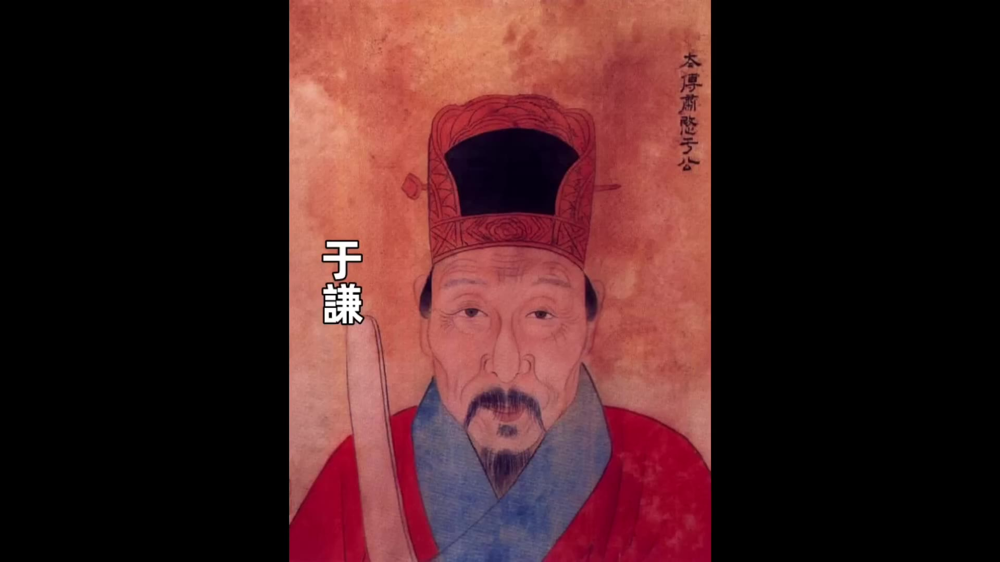
正月二十二日于謙和王文同—天被處死于謙時年60歲岳飛被處死時候的罪名是後人稱為是「三字獄」于謙被處死罪名是「意欲」後人稱為是「兩字獄」于謙死後錦衣衛去抄于謙的家家裡沒有發現任何值錢的東西後來英宗肯定也是知道了于謙是被冤柱的他感到很惋惜可能也有一些後悔《明英宗實錄》；裡面寫的是既久事白上亦知其冤真相大白之後英宗也知道于謙是被冤枉的的記錄我們也能看出來《明英宗實錄》應該是在英宗朝的後期朝廷上下就已經知道了于謙是被冤枉的于謙和王文死了之後英宗的清算還沒結束景帝的親信宦官舒良王誠、張永等人都被處死大學士陳循、刑部尚書俞士悅工部尚書江淵等人被流放邊疆吏部尚書王直禮部尚書胡濙和內閣大學士高穀主動向英宗請辭也離開了官場這是英宗對景帝時期重要大臣的清算對於奪門之變立功的功臣英宗也不吝嗇重重封賞「忠國公」石亨由「武清侯」晉封為子孫世襲徐有貞以原官職進入內閣參與機務「武功伯』後來又被封為曹吉祥晉封為司禮監太監他的養子曹欽晉升為都督同知這幾個人被封賞之後掌控了朝政大權權傾一時但是他們幾個最終的下場都不好他們掌權之後為了爭權奪利相互陷害石亨和曹吉祥死於非命徐有貞被貶為平民流放到雲南這就是奪門之變最後我們稍微總結一下
英宗能夠成功復辟屬於是陰差陽錯完全沒有預謀是石亨、曹吉祥、徐有貞等人的政治投機的結果他能有這個復辟的機會得益於景帝的生病其實景帝的行事你說他仁義也不夠仁義說他狠辣也不夠狠辣你說他仁義肯定說不上因為迎英宗回來的時候他推三阻四無可奈何迎回來之後又把英宗給幽禁了七年你要說他狠辣他要是足夠狠辣就應該堅決的不迎英宗回來就算迎回來了這七年時間也足夠他採取進一步的手段謀害英宗但是他都沒做而且對於英宗的舊臣就不說外臣的官員就連內臣曹吉祥這樣的宦官曾經被英宗寵信過的宦官景帝還留在身邊所以景帝既不夠仁義又不夠狠辣猶猶豫豫地走了中間路線最終被英宗復辟自己下場淒涼好了今天的故事就講到這裡T1921-1945年的專題歷史課程」我開通了
00:25:02
有興趣的朋友歡迎點擊影片下方鏈接瞭解歡迎大家點贊關注
00:00:00
大家好今天我們講奪門之變景泰八年正月十七日大明王朝的文武大臣像往常一樣入宮早朝他們走入奉天門之後看到的景象使他們目瞪口呆皇位上坐著的皇帝居然不是景帝朱祁鈺
而是八年前的皇帝英宗朱祁鎮就在群臣面面相覷還沒搞清楚怎麼回事的時候徐有貞站出來大喊一聲太上皇復除了英宗朱祁鎮對百官說道景泰皇帝病重迎群臣迎朕復位你們仍然擔任原來的官職咱們共享太平一眾大臣看到如此情形只好跪下參拜口呼萬歲被幽禁在南宮的太上皇朱祁鎮一夜復辟史稱「奪門之變」或者「南宮復辟」朱祁鎮也是歷史上唯-一位由太上皇成功復辟的皇帝朱祁鎮為什麼能夠成功復辟他復辟之後給明朝帶來的影響是什麼今天我們就講講這場奪門之變
景泰二年七月景帝朱祁鈺寵愛的杭妃給他生下了一個兒子取名朱見濟有了朱見濟之後景帝就開始想要易立太子現在的太子是朱見深有了自己的兒子之後景帝就想讓他自己的兒子當太子
但是景帝在登基的時候曾經發佈過詔書許諾過接受朱見深為太子這時候他要改立太子實在是沒件麼理由景帝只能試探性的去試試朝廷內外的態度他第一個先試探的是大宦官金英他問金英太子的生日是七月初二吧七月初二是景帝的兒子朱見濟的生日金英一聽就明白景帝是什麼意思他要是接話說太子的生日確實是七月初二金英雖然明白但是他偏向於朱見深不想附和景帝他就回答道說太子的生日是十一月初二景帝一聽接下來的話就不說了金英不開竅
景帝就把話放明白了去問宦官王誠和舒良的意見王誠和舒良都是景帝寵信的太監王誠給景帝出主意他說您可以去賄賂大臣讓皇帝去賄賂大臣這聽起來有點奇怪啊但是景帝還真聽了他賜給內閣大學士陳循、高穀、王文等人每人100兩白銀這些大臣拿到景帝的賞賜之後都明白景帝這是要改立太子
吏部尚書王直氣得拍案頓足說道這叫什麼事我輩慚愧死了這些大臣雖然都明白景帝的心意這下景帝著急了景帝的太監興安跑前跑後的忙活滿朝文武居然沒有任何一個人上奏提出要改立太子就在這時候遠在千里之外的廣西發生一件事沒想到幫了景帝一把廣西思明府的土知府一直都是由黃家世襲景泰三年正月的時候老知府年老他想傳位給大兒子結果他的小兒子黃紘不幹黃紘為了世襲這個位置居然殺死了他父親和他兄長全家結果後來事情被揭發出來當地巡撫要把黃紘革職查辦黃紘趕緊派人到京師求救他讓人帶上重金想要行賄保命他派去的人到了京師之後經過「高人」指點回去告訴黃紘應該怎麼辦黃紘收到高人的指示之後居然從千里之外給景帝上奏折請求改立太子他寫的內容大概意思是說皇帝即位已經3年了還沒有立自己的兒子為皇儲但恐怕不是社之福一旦形勢有變就有可能發生內部相殘到時候悔之晚矣所以乞求皇帝快點把自己的兒子立為皇儲黃紘說的這番話完全是政治投機但是景帝看到之後非常高興景帝說
沒想到在千里之外還有這樣的忠臣景帝不但下旨免除了黃紘的殺父殺兄之罪還給他升官都督同知然後景帝把黃紘的奏折發給禮部
讓禮部尚書胡濙主持廷議在廷議的時候戶科給事中李侃吏科給事中林聰還有御史朱英三個人率先反對但是一些重臣王直和胡濙這些重臣都沒表態像于謙看到這些有威望的重臣都不表態宦官興安（口誤）厲聲說道同意的署上名字不同意的不必署名但是不可以首鼠兩端然後他就掏出一張紙讓群臣簽名一眾大臣看興安早有準備事已至此大多數都表示贊同內閣大學士陳循、高穀等人他們收過景帝的賄賂他們先簽名
但是猶豫了一會
00:05:00
他也簽了輪到于謙的時候于謙猶豫了很久最終也簽了後面的大臣看陳循、王宜于謙這些重臣都簽了也就都跟著簽了最後滿朝文武官員都簽了字只有一個人沒簽就是吏科給事中林聰林聰也為他這個舉動付出了代價後來他被景帝找個理由打入大牢廷議結束之後
景帝正式下詔立皇子朱見濟為皇太子改封原太子朱見深為沂王在這件事情上于謙的表現跟以往不一以前無論是遷都問題北京保衛戰的防禦策略還是要不要跟瓦刺議和的問題這些對外的事情于謙都能表現出堅定的立場但這次對於皇室的問題他猶豫不決最終沒能堅持于謙在簽字的時候他既沒有堅持不簽但是呢也沒表現出來很同意由於他一直是猶豫不決的態度景帝對他也很不滿意從此景帝就逐漸疏遠了于謙始終沒讓于謙入內閣
歷史很有戲劇性景帝費盡心機廢掉了英宗的兒子朱見深把自己的兒子朱見濟立為太子但是朱見濟當上太子之後只過了一年就天折了景帝只有朱見濟這一個兒子這下太子的位置懸空了太子位懸空眾大臣又想復立朱見深為太子景帝私心很重估計誰會倒霉但是也有不怕死的監察御史鐘同和禮部郎中章綸兩個人先後上書建議重新立朱見深為太子果然景帝大怒他讓錦衣衛把鐘同和章綸都抓起來關進了臭名昭著的詔獄主審官員得到司禮監的授意一定要追究出幕後主使是誰對鐘同和章綸嚴刑拷打誰是幕後主使主審官不停的影射南宮詢問他們二人是如何跟南宮聯繫的南宮關的就是太上皇英宗他們想把幕後的主使往太上皇英宗身上引導但是鐘同和章綸根本就沒有幕後主使他們也很有氣節沒有被屈打成招鐘同和章綸被冤枉有很多大臣同情和支持他們但是沒人敢替他們說話這時候有一個進士叫楊集楊集給于謙寫了一封信這封信說的很不客氣說當時改立太子本來就不對你們這些堪稱國家棟梁的大臣居然允許了你們難道不應該根根辦法營救嗎如果他們被打死了你們就可以安坐高堂享受俸祿嗎
于謙看到這封信心中很有感觸他把信拿給剛入閣的大學士王文看主文說這個書生不知忌諱不過還挺有膽量於是他就讓楊集出任六安知州于謙和王文雖然欣賞楊集的膽識
對鐘同和章綸也沒出手營救最後鐘同被活活打死章綸被打得奄奄一息一直關在牢里從此之後滿朝文武再也沒有人敢提復立太子的事情•章綸的結局我們說一下英宗復辟之後聽說了鐘同和章綸的事情他把章綸從牢裡面解救出來給章綸升官厚厚的加賞了他一番
景泰八年正月年僅29歲的景帝居然病倒了而且病的還不輕景帝病倒之後好幾天都不能來上朝大臣們每天都去左順門問安正月十二號這天大臣們還是來問安景帝的太監興安有點不耐煩了興安說你們都是朝廷的股肱之臣不能為社稷考慮每天徒勞來問安又有什麼用大臣每天來問安一方面是關心景帝的病情還有一方面他們最擔心的是「儲位未定』就是景帝還沒立太子聽到興安這麼說好像是在暗示大臣們應該早日立儲大臣們就在文淵閣開會討論請求皇帝冊立皇儲一開始陳循、高穀、胡濙等大臣都說應該請皇帝重新立沂王朱見深為太子後來有人說說沂王既然已經退了就不可以重立我們只能提出來「早建元良』的請求『早建元良」就是盡快冊立太子正月十四大臣們把「早建元良」的奏折遞上去之後景帝回復說
朕偶有寒疾十七日當早朝所請不允景帝的意思就是說他病得不嚴重不用考慮立太子的問題十七號他就能來早朝景帝說他病得不嚴重但實際情況好像並不是第二天是正月十五正月十五有一個很重要的在南郊舉行的祭祀儀式這個祭祀儀式是需要皇帝親自主持的景帝依然是病得起不來床他只能選一位可靠的大臣替他去南郊祭祀景帝選的大臣是武清侯石亨石亨我們講北京保衛戰的時候介紹過
00:10:01
打北京保衛戰的時候兩個最高的統帥是于謙和石亨于謙是文官石亨是武將石亨是軍方的最高統帥北京保衛戰結束之後石亨被封為武清侯景帝任命他為總兵官提督京城各營兵馬也就是說在景泰年間石亨是大明武將的核心是最重要的武將領袖景帝在病重的時候他沒有傳召于謙沒有傳召內閣大臣而傳召的是石亨說明景帝對石亨非常信任景帝把石亨傳召到自己的病榻前親自囑咐他祭祀的事宜• 景帝對石亨是充滿信任但是石亨卻動了別的心思石亨是發動奪門之變的第一個重要人物石亨是在景帝生病之後外臣裡面唯——個見到景帝的人他就開始為自己的將來做打算一旦景帝駕崩誰會繼承王位他的前途如何石亨滿腦子裡面飛快的運轉他聽說文臣裡面有一些大臣要擁立沂王朱見深為太子還有一些大臣建議要立襄王世子為太子景帝要是駕崩了不管是朱見深當皇帝還是襄王世子來當皇帝這些都是文臣擁立的功勞功勞落不到他這個武將頭上石亨想到一個立功的方法要是他能夠擁立英宗復辟這絕對是一個蓋世奇功石亨從景帝那出來之後找到兩個人一個是都督張軏一個是太監曹吉祥張軏是前府右都督總京營兵是京師裡面握有兵權的實力派人物他是武將跟石亨是同樣的處境就是無論誰當太子擁立太子的功勞都落不到他頭上所以他也贊同幫助英宗復辟
曹吉祥在皇宮裡面是司設監太監司設監太監的地位雖然沒有司禮監太監高但是他曾經多次隨軍出征在皇宮裡面他能調動禁軍和內廷侍衛石亨找曹吉祥還有一個原因是曹吉祥以前是依附過大太監王振的英宗在位的時候曹吉祥就比較得英宗的寵信景帝即位之後王振的同黨無論是太監還是錦衣衛很大一部分都被景帝清理了但是曹吉祥為人比較圓滑他居然逃過一劫而且還又逐漸獲得了景帝的信任所以石亨找的這兩個人一個是能夠調動京營的兵馬一個是能夠調動宮內的禁軍都是關鍵人物三個人一拍即合要幹成這件大事商議完成之後三個人分頭行動曹吉祥進宮去見孫太后取得孫太后的支持有孫太后的支持英宗復辟在政治上就具有合法性石亨和張軏一起去找太常寺少卿許彬因為他們兩個都是武將需要許彬出來出謀劃策許彬說這是一件不世奇功不過我老了不中用了你們去找徐有貞徐有貞足智多謀你們可以去找他商議石亨和張軏又連夜去找徐有貞徐有貞就是徐珵我們以前講過他明軍在土木堡戰敗之後徐珵是第一個主張南遷的人徐珵當時說他觀察天象北方已經不可為他主張遷都南京他的建議在朝廷上遭到于謙的大聲呵斥
于謙說「言南遷者可斬也」然後就打北京保衛戰明軍守住了北京城從此之後徐珵不僅一直沒得到升遷他還名聲大壞經常被人嘲笑所以徐珵對于謙非常記恨後來徐珵把名字改為徐有貞繼續當官徐有貞這個人其實很有才景泰二年的時候黃河沙湾運道決堤徐有貞被派去治理黄河當地黃河的問題很複雜很多官員去治理都沒有成效徐有真去了之後他沼著河堤現揚勘查提出了二條疏通措施最後成功的消除了水患整個過程他既展現出了實幹能力•又展現出了行政能力所以徐有貞在能力方面被很多人看好石亨和張軏找到徐有貞徐有貞非常興奮他認為這是千載難逢的好機會徐有貞就成為了策劃整個事件的核心人物徐有貞又是觀測天象
咱們得盡快下手他們幾個仔細策劃之後決定在正月十六晚上動手這時候曹吉祥也傳來消息曹吉祥說孫太后那邊已經同意了而且孫太后通過宮內的渠道已經把消息傳遞給了在南宮的英宗英宗也已經有了準備徐有貞又找了兩個幫手一個是楊善楊善我們上期節目也說過他就是那個憑借一己之力把英宗從瓦刺迎回朝的人他肯定是支持英宗復辟
00:15:00
王驥是五朝老臣當時已經80歲了但是身體還很好他曾經立下過赫赫戰功被封為靖遠伯景帝登基之後為了削弱正統舊臣的影響力他把王驥派往南京邊緣化王驥王驥的心中對景帝就一直有不滿的情緒當時正好是正月各地的官員每三年要到京師進行一次朝覲也就是他們親自向皇帝彙報工作剛好這時候王驥在北京等著向皇帝彙報他就被石亨和徐有貞拉攏一起參與了奪門之變策劃奪門之變的幾個人就已經聚齊了楊善石亨、徐有貞、曹吉祥、張軏、他們做好了全盤的計劃就等十六號晚上行動從十四號石亨見到景帝病重到16號晚上行動他們一共才準備了3天時間這屬於是臨時起意快速行動由於時間很短他們又很謹慎所以沒被文官集團聽到任何風聲十六號白天文官集團這邊也有行動吏部尚書王直
禮部尚書胡濙兵部尚書于謙他們組織群臣商議決定要一起上奏請求皇帝復立沂王朱見深為太子眾人在商議結束然後起草完奏折之後太陽已經下山了當天來不及上奏朝廷反正第二天是十七號景帝說過十七號會上朝大家就覺得十七號早朝再把奏折遞上去直接遞給皇帝看但是所有人都沒想到政變就在這天晚上爆發了這份奏折如果能夠早遞上去 天可能很多人的命運都會改變這些建議復立朱見深為太子的人有可能就不會被清算
正月十六日晚上徐有貞換上朝服懷著緊張的心情離開家出門之前他還跟家人交代說我要去辦一件大事辦成了是朝廷之福辦不成咱們家就是滅頂之災你們要有心理準備石亨、徐有貞、曹吉祥幾方人馬會齊了之後張軏又調來了大隊的京營士兵一起向皇城進發
石亨掌管著皇城的通行權所以他們進入皇城沒受到飪何阻礙進入皇城之後他們很快到達南宮南宮的宮門被景帝下令封死徐有貞看到情況之後果斷下令讓士兵找來了一根巨大的木頭幾十個士兵利用這根巨木撞開了宮門和圍牆他們才進入到南宮的內部進入到南宮內部之後他們見到英宗英宗已經在等著了眾人一起跪在地上說道請太上皇登位
英宗挨個問了這些人的官職姓名表達出不會忘記的意思然後跟著眾人一起出發一行人來到東華門守門的士兵上前阻攔英宗朱祁鎮站出來說我是太上皇守門的士兵不敢阻攔眾人兵不血勿的進入到皇宮然後進入到奉天門朱祁鎮坐上了皇帝的寶座眾人跪在地上高呼萬歲這時候天色已經微亮由於景帝說過今天要來早朝所以一眾大臣都已經早早的等候在午門外石亨敲響鐘鼓召集群臣進來聽到鐘鼓聲後眾大臣按照順序走入奉天門但是眼前的一幕讓他們目瞪口呆坐在皇位上的居然不是景帝朱祁鈺而是八年前的皇帝朱祁鎮這時候徐有点站出來大喊一聲『太上皇復辟了英宗對百官宣佈說景泰皇帝病重群臣迎朕復位你們仍然擔任原來的官職咱們共享太平一眾大臣看到如此情形只好跪下參拜口呼萬歲英宗成功復辟英宗復辟之後把景帝貶回為郕王一個月之後景帝朱祁鈺就去世了根據史料記載朱祁鈺是病死的但是也有傳聞說他是被害死的真相究竟是什麼這個就沒人知道了英宗賜給他一個帶有負面評價的謚號「郕戾王」戾是暴戾的「戾」
景帝時期受到重用的大臣也遭到英宗的清算英宗復辟當天兵部尚書于謙和內閣大學士王文就被錦衣衛當場逮捕然後內閣大學士陳循、刑部尚書俞士悅工部尚書江淵等人也被下獄包括景帝親信的宦官舒良等人也被逮捕下獄王誠、于謙和王文被逮捕之後遭到酷刑然後以「意欲迎立襄王世子』的罪名被判處死刑這個罪名是「意欲迎立襄王世子』因為刑部對于謙和王文嚴刑拷打但是始終找不到他們迎立襄王世子的證據要是能找到證據的罪名就坐寶了「迎立襄王世子』這是謀反罪是大罪肯定是要被處死但是他們找不到證據最後定的罪名就是「意欲迎立襄王世子」也給定成了死刑
00:20:01
當英宗看到三法司把于謙定為死刑的時候他是很猶豫的他沒有立刻下令執行而是猶豫了兩天
英宗知道于謙在北京保衛戰中立有巨大功勞要是沒有于謙他的宗廟社稷可能都危險了所以對於殺于謙英宗很猶豫但是徐有貞和石亨等人跟于謙都有重大過節他們堅持要殺于謙徐有貞跟于謙的過節很明顯了徐有貞當年建議南遷就是被于謙呵止導致他在景泰朝一直都不得志石亨跟于謙也有過節石亨曾經討好過于謙反被于謙羞辱石亨有一次給景帝上書請求景帝加封于謙的兒子于冕這是他有意的去討好于謙
沒想到于謙很清高他不僅義正言辭的拒絕了石亨還當眾指責石亨徇私這搞得石亨非常難堪
這個過節只是一個事件更重要的是
在景泰朝時期于謙以兵部尚書的名義總督軍務他在軍事的管理上非常強硬石亨作為手握兵權的大將作為武官的統帥一直被于謙壓制朝廷上就形成了文官壓制武官的風氣這種長期的被壓制讓石亨對於于謙懷恨在心其實徐有貞和石亨都知道要是于謙不死他們即使復辟立功也難以掌握朝政大權他們要想掌權必須要除掉于謙•所以他們就羅織罪名以「意欲迎立襄王世子」的罪名要殺掉于謙在英宗猶豫不決的時候徐有真跟英宗說說不殺死于謙此舉無名他的意思就是說要是不處死于謙我們發動的這場奪門之變就失去了政治上的正當名義這個是為什麼呢因為他們給于謙定的罪是「意欲迎立襄王世子』迎立襄王世子這是謀反的大罪徐有貞的邏輯是他們發動奪門之變正是為了阻止于謙等人謀反要是不殺于謙所以于謙必須死英宗相當於是被他們給政治綁架要是不殺于謙他的復辟就不合法所以最終英宗下令處死于謙
正月二十二日于謙和王文同—天被處死于謙時年60歲岳飛被處死時候的罪名是後人稱為是「三字獄」于謙被處死罪名是「意欲」後人稱為是「兩字獄」于謙死後錦衣衛去抄于謙的家家裡沒有發現任何值錢的東西後來英宗肯定也是知道了于謙是被冤柱的他感到很惋惜可能也有一些後悔《明英宗實錄》；裡面寫的是既久事白上亦知其冤真相大白之後英宗也知道于謙是被冤枉的的記錄我們也能看出來《明英宗實錄》應該是在英宗朝的後期朝廷上下就已經知道了于謙是被冤枉的于謙和王文死了之後英宗的清算還沒結束景帝的親信宦官舒良王誠、張永等人都被處死大學士陳循、刑部尚書俞士悅工部尚書江淵等人被流放邊疆吏部尚書王直禮部尚書胡濙和內閣大學士高穀主動向英宗請辭也離開了官場這是英宗對景帝時期重要大臣的清算對於奪門之變立功的功臣英宗也不吝嗇重重封賞「忠國公」石亨由「武清侯」晉封為子孫世襲徐有貞以原官職進入內閣參與機務「武功伯』後來又被封為曹吉祥晉封為司禮監太監他的養子曹欽晉升為都督同知這幾個人被封賞之後掌控了朝政大權權傾一時但是他們幾個最終的下場都不好他們掌權之後為了爭權奪利相互陷害石亨和曹吉祥死於非命徐有貞被貶為平民流放到雲南這就是奪門之變最後我們稍微總結一下
英宗能夠成功復辟屬於是陰差陽錯完全沒有預謀是石亨、曹吉祥、徐有貞等人的政治投機的結果他能有這個復辟的機會得益於景帝的生病其實景帝的行事你說他仁義也不夠仁義說他狠辣也不夠狠辣你說他仁義肯定說不上因為迎英宗回來的時候他推三阻四無可奈何迎回來之後又把英宗給幽禁了七年你要說他狠辣他要是足夠狠辣就應該堅決的不迎英宗回來就算迎回來了這七年時間也足夠他採取進一步的手段謀害英宗但是他都沒做而且對於英宗的舊臣就不說外臣的官員就連內臣曹吉祥這樣的宦官曾經被英宗寵信過的宦官景帝還留在身邊所以景帝既不夠仁義又不夠狠辣猶猶豫豫地走了中間路線最終被英宗復辟自己下場淒涼好了今天的故事就講到這裡T1921-1945年的專題歷史課程」我開通了
00:25:02
有興趣的朋友歡迎點擊影片下方鏈接瞭解歡迎大家點贊關注
已核實 / 部分核實
石亨於奪門之變後受封「忠國公」，與影片一致；但受封序列比影片描述更早開始、更漸進 —明史・表・功臣世表三・天順朝（段5323）：「忠國公石亨。景帝即位，八月辛未封武清伯，十月壬戌進封……」——確認石亨最終確實封「忠國公」，與影片相符。但明史表格顯示他最早於景帝即位當年（景泰元年）就已封爵，起始爵位是「武清伯」（伯爵），而非影片所述的「武清侯」（侯爵）——明代爵位由低到高為伯、侯、公，石亨應是先封伯，其後才逐步晉封至侯、公，影片將其最初封爵直接稱為「武清侯」，可能省略了伯爵的起始階段（本次查得的記載在「十月壬戌進封……」處中斷，未能確認中間是否確實經過侯爵這一級）。⚖️
未能獨立核實
- 于謙正月二十二日與王文同日被處死、罪名為「意欲」（迎立襄王世子）之明確記載——本次以「于謙意欲」「于謙下獄」「于謙棄市」等多種檢索詞查詢明實錄均未得直接命中，這是明代史上極為著名的事件，未查得可能是檢索詞選擇問題，而非記載不存在，留待後續以更精確的正統/天順年間卷次直接翻閱核對- 徐有貞原名徐珵、因主張南遷遭于謙斥責後改名一事的確切記載- 曹吉祥於奪門之變後晉封司禮監太監、其養子曹欽晉升都督同知的確切記載- 王驥「時年80歲」的確切年齡- 石亨、曹吉祥「死於非命」，徐有貞被貶為平民流放雲南的具體記載